Bitcoin Energy Estimates (DRAFT)
Estimating the energy use of the Bitcoin network using various approaches.
by Steven Black
Project home: https://github.com/StevenBlack/bitcoin-energy-estimates
Updated: October 21 2023
Introduction
Bitcoin mining uses a Proof-of-Work consensus mechanism. This is controversial for some because that supposedly requires a lot of electrical energy. We see claims the bitcoin network “uses as much electricity as a small country”, or “requires as much electricity as Belgium, or Chile.”
This study assessed those notions using the following approaches:
Presuming Bitcoin mining is marginally profitable, how much energy can be used compared to actual mining rewards over time?:
Given the reported hashrate, how much energy would be required to achieve that.
This paper uses Canadian dollars, partly because that’s my fiat currency, and because Canada publishes particularly good statistics about electricity generation and costs.
Bitcoin price, block rewards, and fees
Bitcoin price right now
For the purpose of discussion, what is the current price of Bitcoin in Canadian dollars?
Bitcoin block rewards
Bitcoin miners are compensated with the block reward for blocks they successfully mine, plus all the transaction fees in that block. In the current epoch (2020 - 2024) the block reward is 6 1/4 BTC.
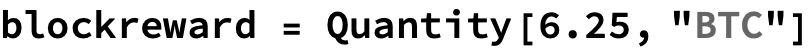
ASSUMPTION: the average of transaction fees per block is 0.15 BTC.
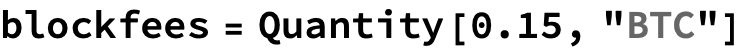
Therefore, the total Bitcoin paid to miners for an average block, denominated in Bitcoin.

The actual block rate
Historically Bitcoin blocks land at a rate faster then the block time target (6 per hour, or 144 blocks per day). Let's recon an average block rate over a sample interval to present day:
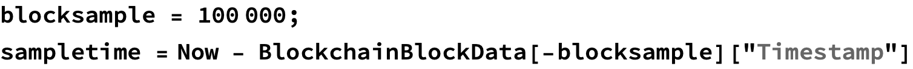
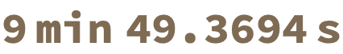
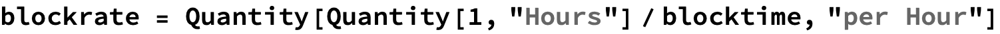
Bitcoin price as a time series
Let's gather data on bitcoin price over the past sampletime.
Hourly Economics
Global revenue per hour
The value, in Canadian Dollars, of all Bitcoin mined globally, per hour.
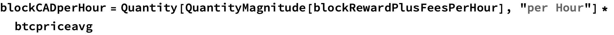
Electricity cost, per kWh
See: https://www.hydroquebec.com/business/customer-space/rates/comparison-electricity-prices.html
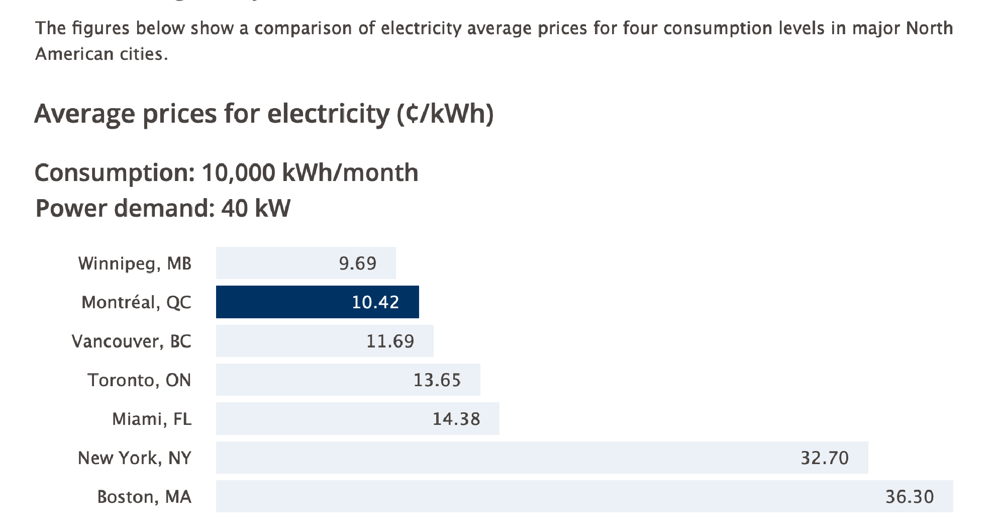
Let’s presume that nobody in their right mind would want to mine Bitcoin in New York or Boston. Here's the distribution of electricity input costs from the other 5 locations.
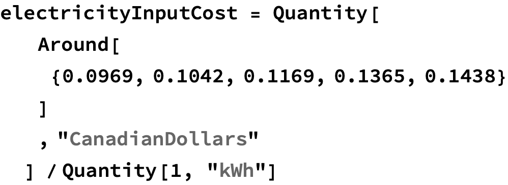
Business cost assumption
Let’s presume 85% of mining revenue is available to pay electricity cost.
Energy economically sustainable
Cognitively we can say, Bitcoin's power consumption is in the order of 11 GWH.
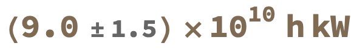
Comparisons with large power generation facilities or regions
Let’s compare the Bitcoin network with the power and energy that generated, or used, by various things.
Here's the raw data for various generation facilities and regions.
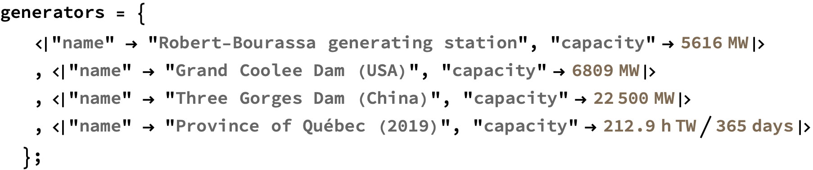

Robert-Bourassa generating station — a.k.a. “LG-2”
Here we compare the power consumption of the bitcoin network with the power generation capacity of the Robert Bourassa generating station in the James Bay region of northern Québec.
See https://en.wikipedia.org/wiki/Robert-Bourassa_generating_station
What is Bitcoin’s global energy use in terms of LG-2?
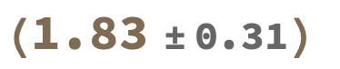
Province of Québec
In 2019 the Province of Québec produced 212.9 TWh of electricity.
What is Bitcoin’s global energy use as a proportion of Québec’s electricity production in 2019?
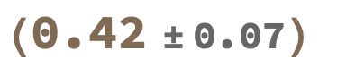
Province of Ontario
See https://www.cer-rec.gc.ca/en/data-analysis/energy-markets/provincial-territorial-energy-profiles/provincial-territorial-energy-profiles-ontario.html
In 2019, the average annual power consumption per capita in Ontario was 9.6 megawatt-hours (MWh).

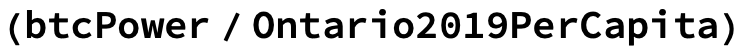
United States
See https://www.worlddata.info/america/usa/energy-consumption.php

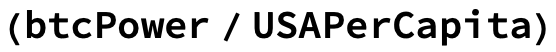
Europe
Again see See https://www.worlddata.info/america/usa/energy-consumption.php